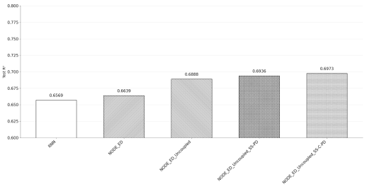
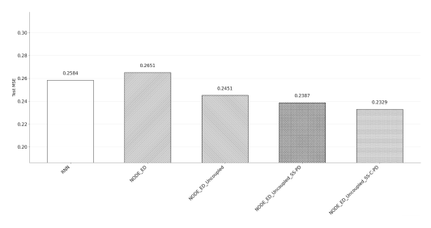

Conclusion
A summary of key findings and remarks
Overview


All physics-informed models outperform the baseline RNN and NODE-ED in both R² and MSE. The best performance is achieved by NODE-ED-Uncoupled (SS-C-PD), with improvements of 6.15% and 9.87% over RNN, and 5.03% and 12.15% over NODE-ED in R2 and MSE respectively. Notably, architectural modifications alone also yield improvements, with NODE-ED-Uncoupled outperforming NODE-ED by 3.75% in R2 and 7.54% in MSE.
Importantly, the value of the developed PIML models extends beyond immediate performance gains, they improve generalisability and ensure that predictions remain consistent with governing principles under unseen conditions. As such despite a modest improvement and larger complexity, the enhanced physical interpretability and model trustworthiness is valuable especially in the field of chemical engineering where predictions are heavily grounded in physical phenomenon.
Appendix
Appendix A: Details of different zones
The following illustrations are a microscale representation of the gas and liquid in contact
SRZ occurs at the top of the tower nearest to the liquid inlet where the concentration of NaOH absorbent is highest. During this phase, the reaction between CO2 and NaOH occurs extremely fast, often occurring as soon as CO2 overcomes mass transfer resistance and dissolves into the liquid film due to the high concentration gradient offered by NaOH. As such, SRZ is formed because the rate of reaction is significantly faster than the mass transfer of CO2 away from the interface, leading to immediate consumption near the surface as illustrated in Figure X.